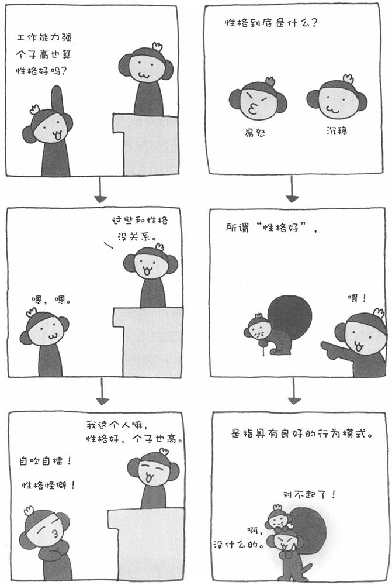

我们常对别人的性格进行评价，"这个人性格很好"、"那个人性格很单纯"……可是，性格到底是什么呢？我想，对于这个问题，很多朋友都是心里清楚但很难用语言表达出来，就好比茶壶煮饺子——有嘴倒（道）不出。
如果从心理学的角度解释性格，也不容易。不同的心理学家给性格所下的定义也不同。在这里，我斗胆为大家概括一下什么是性格。简单来说，性格就是一个人的行为和语言倾向。所谓"性格很单纯"，是说"我们很容易就能想象出这个人接下来的言行"。而"性格很好"，则指"这个人具有一贯的良好思维和言行（温良、具有同情心等）"。
很多心理学家在研究性格时，会把性格分为几种类型。德国有一位精神病学家名叫克雷奇默尔，他把人的体型与性格联系起来进行研究的理论非常着名。他把人的体型分为三种，不同体型人的性格特征如下：
○瘦弱型
谨慎、保守的性格。在这种人身上，既有神经质、敏感的一面，也有无法理解别人心情、迟钝一面。
○肥胖型
社交型性格，但是有躁郁倾向，且性情多变。
○斗士型（坚实）
安静、规规矩矩，但也有突然暴跳如雷的时候。
